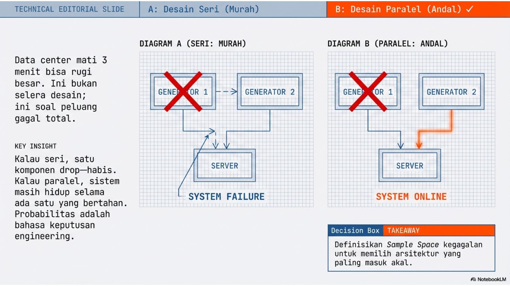

Probabilistic Framework in Engineering Application (Data Center, Generator Backup, Reliability)

“Data center mati 3 menit bisa rugi besar. Kamu punya 2 generator—pasang seri atau paralel? Ini bukan selera desain; ini soal peluang gagal total. Kalau seri, satu komponen drop—habis. Kalau paralel, sistem masih hidup selama ada satu yang bertahan. Hari ini probabilitas berubah jadi ‘bahasa keputusan engineering’: kita hitung peluang kegagalan sistem dan memilih arsitektur yang paling masuk akal. Ending-nya bukan rumus—ending-nya rekomendasi desain.”
Week 03: Reliabilitas Infrastruktur IT (Teori & Simulasi SRE)
4.1 Agenda Perkuliahan Minggu 3
Topik: Studi Kasus Infrastruktur - Reliabilitas dan Resiliensi Tema Misi: “Architecting for Failure: How to Build Systems That (Almost) Never Die”
4.1.1 Pertemuan 1: Senin (1 Jam) – The Intuition & The Trap
Fokus: Memahami kerapuhan sistem seri dan kekuatan redundansi (paralel) melalui simulasi visual.
00:00 – 00:10 | The Hook: “The 500-Error Nightmare”
Sistem k-out-of-n: Sistem berfungsi jika minimal k dari n komponen berfungsi (Contoh: Mayoritas voting pada blockchain).
4.2.2 2. Aplikasi Sistem Informasi
High Availability (HA): Load Balancer membagi trafik ke beberapa server aplikasi (Paralel). Jika satu server crash, yang lain mengambil alih.
ML Pipeline (Seri): Ingestion \(\to\) Cleaning \(\to\) Training \(\to\) Deployment. Jika Ingestion gagal, model tidak bisa dilatih. Ini adalah sistem seri yang kritis.
Disaster Recovery (DR): Memiliki Secondary Data Center. Ini adalah paralel tingkat tinggi. Namun hati-hati dengan Common Cause Failure (misal: AWS Region US-East-1 down total).
4.2.3 3. Komputasi (Python)
Fungsi Kustom: Membuat fungsi reliability_series(probs) dan reliability_parallel(probs) menggunakan numpy.prod.
Simulasi Monte Carlo: Menggunakan random.random() untuk mensimulasikan status hidup/mati ribuan server dan menghitung persentase uptime sistem gabungan.
4.3 Tugas Kelompok (GitHub Classroom)
Judul: Week 3: The SRE Challenge - Designing High Availability Systems
Deskripsi: Mahasiswa berperan sebagai Site Reliability Engineer (SRE). Diberikan topologi sistem yang kompleks (gabungan seri dan paralel), mahasiswa harus menghitung reliabilitas teoretis dan memvalidasinya dengan simulasi Python.
Soal Python (Notebook): 1. Modeling (30 poin): Representasikan sistem berikut dalam fungsi Python: - Sub-sistem A: 3 Web Server (Paralel, (R?)=0.9). - Sub-sistem B: 1 Database Utama (R=0.99). - Sistem Total: Sub-sistem A terhubung Seri dengan Sub-sistem B. 2. Calculation (30 poin): Hitung reliabilitas teoretis sistem total. 3. Simulation (20 poin): Jalankan simulasi 10.000 kali. - Generate status acak untuk tiap komponen. - Cek logika: (Web1 OR Web2 OR Web3) AND Database. - Hitung frekuensi sukses empiris. 4. Analysis (20 poin): Jika budget memungkinkan penambahan 1 komponen (Web Server lagi ATAU Database Backup), mana yang paling signifikan menaikkan reliabilitas total? Buktikan dengan angka.
4.4 15 Soal & Solusi
4.4.1 A. Pertanyaan Konseptual
Soal: Mengapa sistem seri dianggap memiliki resiliensi yang lebih rendah dibandingkan sistem tunggal dengan komponen yang sama?
Solusi: Karena dalam sistem seri, reliabilitas total adalah hasil perkalian reliabilitas komponen (\(R_{total} = \prod R_i\)). Karena \(R_i \le 1\), hasil perkalian akan selalu lebih kecil dari nilai komponen terendah. Menambah komponen seri justru menambah titik kegagalan (Point of Failure).
Soal: Jelaskan bagaimana redundansi paralel meningkatkan reliabilitas total sebuah sistem informasi.
Solusi: Redundansi paralel menciptakan jalur alternatif. Sistem hanya gagal jika semua jalur gagal bersamaan. Secara matematis, peluang kegagalan total (\(F_{total}\)) adalah hasil kali peluang kegagalan komponen (\(F_i\)). Karena \(F_i\) kecil (misal 0.1), mengalikannya akan menghasilkan angka yang sangat kecil (0.01), sehingga Reliabilitas (\(1-F_{total}\)) meningkat drastis.
Soal: Apa yang dimaksud dengan ketersediaan (availability) “lima sembilan” (99,999%) dan mengapa sulit dicapai?
Solusi: “Lima sembilan” berarti sistem harus beroperasi 99,999% dari waktu, yang setara dengan downtime hanya sekitar 5,26 menit per tahun. Ini sulit dicapai karena memerlukan redundansi berlapis (hardware, power, network, geographic) dan eliminasi single point of failure sepenuhnya, serta mitigasi terhadap common cause failures.
Solusi: Rumus standar paralel (\(1-\prod F_i\)) mengasumsikan kegagalan komponen bersifat independen. Jika ada ketergantungan (korelasi positif, misal satu rak server panas menyebabkan server lain ikut panas), probabilitas kegagalan bersama akan jauh lebih tinggi daripada hasil perkalian independen. Ini menyebabkan reliabilitas aktual lebih rendah dari perhitungan teoretis.
Soal: Deskripsikan perbedaan antara kegagalan aktif dan kegagalan laten dalam sistem infrastruktur.
Solusi:
Kegagalan Aktif: Kerusakan yang langsung terlihat dan berdampak (misal: server meledak, kabel putus).
Kegagalan Laten: Kerusakan yang sudah ada tapi belum memicu error sampai kondisi tertentu terpenuhi (misal: bug pada kode backup yang baru ketahuan saat backup benar-benar dibutuhkan/dijalankan).
4.4.2 B. Pertanyaan Aplikatif
Soal: Sebuah jalur internet backbone terdiri dari 3 router yang disusun seri. Jika masing-masing memiliki reliabilitas 0,95, hitung reliabilitas total jalur tersebut.
Soal: Analisis ketersediaan sistem cloud yang memiliki 4 server paralel di mana sistem tetap berjalan jika minimal 1 server aktif. (Asumsi R tiap server tidak disebut, kita asumsikan R=0.9 untuk contoh, atau F=0.1).
Solusi: Sistem gagal hanya jika ke-4 server mati. \(P(\text{SystemDown}) = F^4\). \(R_{system} = 1 - F^4\).
Soal: Dalam desain Disaster Recovery Center (DRC), jika link utama memiliki uptime 99% dan link cadangan 98%, hitung probabilitas total sistem terhubung.
Soal: Sebuah gedung data center menggunakan 3 generator cadangan. Jika probabilitas satu generator gagal menyala adalah 0,02, berapa probabilitas setidaknya satu menyala saat listrik padam?
Solusi: Peluang semua gagal = \(0.02^3 = 0.000008\). Peluang setidaknya satu menyala = \(1 - 0.000008 = 0.999992\).
Soal: Evaluasi reliabilitas sistem transmisi data di mana satu file dibagi menjadi 5 paket dan sistem gagal jika salah satu paket hilang.
Solusi: Ini adalah analogi sistem Seri. Jika \(R_{paket}\) adalah reliabilitas pengiriman satu paket, maka reliabilitas pengiriman file adalah \((R_{paket})^5\). Risiko kegagalan meningkat seiring bertambahnya jumlah pecahan paket.
4.4.3 C. Pertanyaan Komputasional
Soal: Buat fungsi Python untuk menghitung reliabilitas sistem seri dengan input berupa list reliabilitas komponen.
Soal: Implementasikan simulasi untuk membandingkan reliabilitas sistem seri vs paralel dengan jumlah komponen n dari 1 sampai 10.
Solusi:
import matplotlib.pyplot as plt n_range =range(1, 11) p =0.9r_series = [p**n for n in n_range] r_parallel = [1- (1-p)**n for n in n_range] plt.plot(n_range, r_series, label='Seri') plt.plot(n_range, r_parallel, label='Paralel') plt.legend(); plt.show()
Soal: Tulis skrip untuk menghitung jumlah minimum komponen paralel yang dibutuhkan agar reliabilitas total mencapai 0,999.
Soal: Gunakan matplotlib untuk memplot grafik hubungan antara jumlah komponen paralel dan reliabilitas sistem.
Solusi: (Lihat solusi no 12, fokus pada garis Paralel yang melengkung asimtotik mendekati 1).
Soal: Simulasikan kegagalan komponen secara acak dalam 10.000 iterasi untuk mengestimasi Mean Time To Failure (MTTF) sistem sederhana.
Solusi:
import numpy as np # Asumsi: Probabilitas gagal per jam = 0.01 trials =10000failure_times = [] for _ inrange(trials): time =0while np.random.rand() >0.01: # Selama belum gagal time +=1failure_times.append(time) print(f"Estimasi MTTF: {np.mean(failure_times)} jam")
Lihat kode
import randomrandom.randint(1,6)
3
4.5 1. Konsep Pengetahuan
Keandalan sistem (reliability), sistem seri vs paralel. Dalam sistem paralel, sistem bekerja jika setidaknya satu komponen bekerja, sedangkan seri membutuhkan semua komponen bekerja.
4.6 2. Tipikal Problem
Sebuah pusat data memiliki dua generator listrik. Apakah lebih baik menyusunnya secara seri atau paralel untuk menjamin ketersediaan daya?
4.7 3. Solusi & Pengambilan Keputusan
Menghitung probabilitas kegagalan sistem. Pada desain paralel, peluang kegagalan total adalah hasil kali peluang kegagalan masing-masing unit (yang jauh lebih kecil). Keputusan optimalnya adalah menggunakan konfigurasi paralel untuk meningkatkan reliabilitas sistem secara drastis.
4.8 4. Eksplorasi Komputasi (Python)
Gunakan sel di bawah ini untuk mengimplementasikan simulasi atau penyelesaian masalah di atas menggunakan Python.
Lihat kode
# Tulis kode Python Anda di siniimport numpy as npimport pandas as pdimport matplotlib.pyplot as pltimport scipy.stats as statsprint("Siap untuk komputasi Minggu 03!")
Siap untuk komputasi Minggu 03!
Source Code
---title: "Minggu 03: Studi Kasus Aplikasi Teknik"subtitle: "Probabilistic Framework in Engineering Application (Data Center, Generator Backup, Reliability)"---{{< include ../agenda/w03.qmd >}}{{< include ../hands_on_py/03-probability-rules.qmd >}}## 1. Konsep PengetahuanKeandalan sistem (reliability), sistem seri vs paralel. Dalam sistem paralel, sistem bekerja jika setidaknya satu komponen bekerja, sedangkan seri membutuhkan semua komponen bekerja.## 2. Tipikal ProblemSebuah pusat data memiliki dua generator listrik. Apakah lebih baik menyusunnya secara seri atau paralel untuk menjamin ketersediaan daya?## 3. Solusi & Pengambilan KeputusanMenghitung probabilitas kegagalan sistem. Pada desain paralel, peluang kegagalan total adalah hasil kali peluang kegagalan masing-masing unit (yang jauh lebih kecil). Keputusan optimalnya adalah menggunakan konfigurasi paralel untuk meningkatkan reliabilitas sistem secara drastis.## 4. Eksplorasi Komputasi (Python)*Gunakan sel di bawah ini untuk mengimplementasikan simulasi atau penyelesaian masalah di atas menggunakan Python.*```{python}# Tulis kode Python Anda di siniimport numpy as npimport pandas as pdimport matplotlib.pyplot as pltimport scipy.stats as statsprint("Siap untuk komputasi Minggu 03!")```